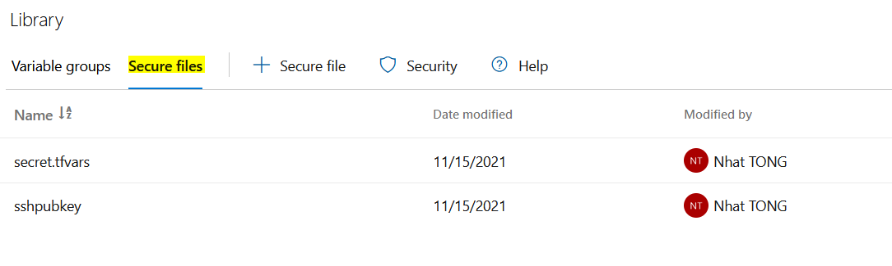

In this article, we walk through how to create a Kubernetes cluster on a cloud provider (AKS, GKE) using Terraform. Next, we deploy this cluster through a CI/CD pipeline (Azure DevOps Pipeline and Github Action).
On the first project, we deploy our cluster to AKS through Azure DevOps pipeline.

On the second project, we will use Github action as our CI/CD and we will create a GKE cluster.

The choice of tool is indicatif. You can choose which one which is the best fit for your case/business.
First project
In this project, we will create a AKS cluster using Terraform and deploy it through Azure DevOps pipeline.
Code Terraform
The example is available here: deploy aks cluster using terraform
We need to tell Terraform which credential and which subscription your resources will be deployed to by declare them into provider block:
If you want to store terraform state on a remote backend which is recommended, you also need to tell to Terraform which credentials and which backend to work with:
Our credentials will be given at runtime through Azure DevOps pipeline.
AzureDevOps pipeline
If you don’t have an account on Azure DevOps, create one by this link: https://azure.microsoft.com/en-us/services/devops/pipelines/. You can use up to 10 free parallel jobs for your projects.
The pipeline yaml look like this:
It will:
- install terraform
- connect terraform to backend via terraform init
- show infrastructure changes via terraform plan
- apply theses changes via terraform apply
On AzureDevOps, we need to configure two secure files (from Azure DevOps pipeline):
- secret.tfvars
- This file contains the following parameters:
- client_id = [YOUR_CLIENT_ID]
- client_secret = [YOUR_CLIENT_SECRET]
- subscription_id = [YOUR_SUB_ID]
- tenant_id = [YOUR_TENANT_ID]
- This file will be passed to Terraform using “Partial Configuration”. With this in place, we can secure our access to Azure.
- This file contains the following parameters:
- sshpubkey: public ssh key to connect to our worker nodes

So far, so good. Now, we can run our pipeline to create our AKS cluster.
Second project
Code Terraform
The example is available here: deploy gke cluster using terraform
Github Action
Create a pipeline on Github
The pipeline look like this: